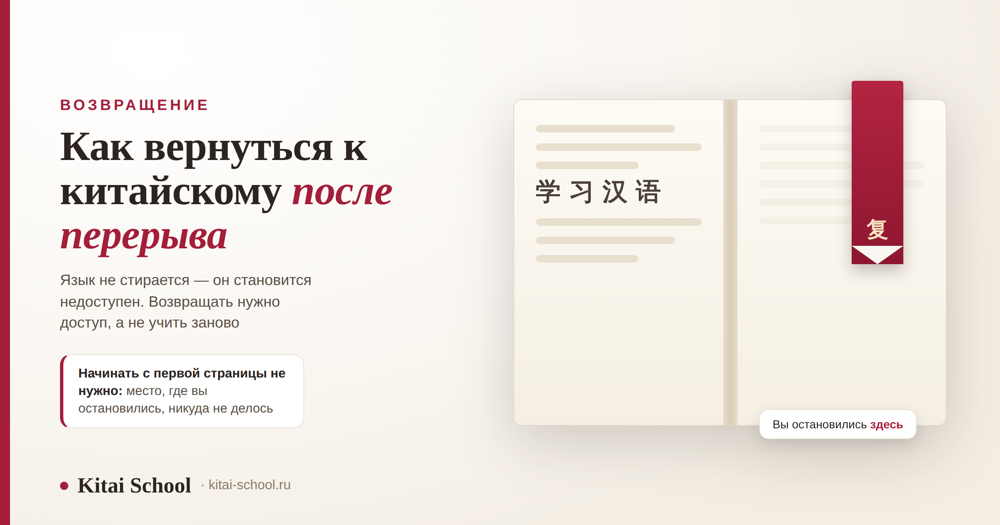
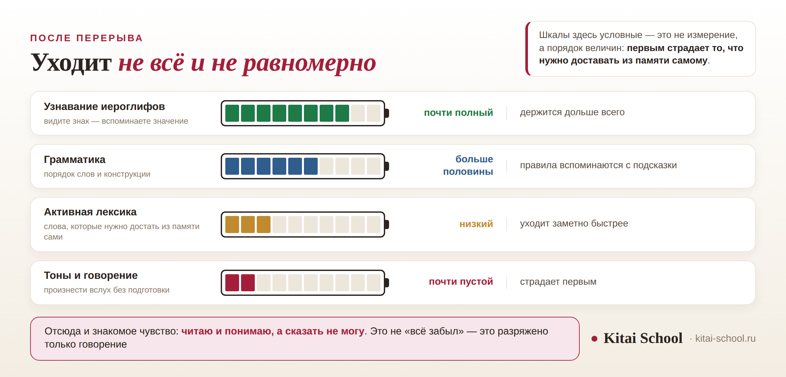

Возвращение
Как вернуться к китайскому после перерыва: что забывается первым и почему это восстанавливается быстрее, чем учится


Почти все, кто возвращается после паузы, приходят с одной фразой: «я всё забыл». Почти всегда это неправда — и проверяется за пять минут. Язык уходит неравномерно: узнавание знаков держится долго, а говорение разряжается первым. Отсюда и знакомое ощущение, когда читаешь и понимаешь, а сказать не можешь ничего. Разберём, что происходит в перерыве, почему восстановление идёт быстрее первого раза и с чего начинать.
Язык не стирается, он становится недоступен — и доступ возвращается. Первым уходит активное: тоны, говорение, слова, которые нужно достать из памяти. Дольше всего держится узнавание иероглифов. Повторное изучение быстрее первичного, но с первой страницы учебника начинать не нужно. Начните с диагностики: запишите свою речь и послушайте.
Короткий ответ: язык не стирается
То, что кажется исчезновением, исследователи описывают иначе: знание сохраняется, но к нему теряется доступ. Отсюда и главный практический вывод — возвращение это не обучение заново, а восстановление доступа к тому, что уже лежит в памяти.
Проверить это можно самому и прямо сейчас. Откройте текст того уровня, на котором закончили, и прочитайте вслух. Скорее всего, выяснится, что:
- знаки узнаются — не все, но большая часть;
- смысл в целом понятен, хотя отдельные слова выпали;
- вслух читать неловко: тоны плывут, темп рваный;
- сказать своё по той же теме почти невозможно.
Это не случайный набор. Так выглядит типичная картина после перерыва, и она подсказывает, с чего начинать.
Важно и то, чего в этой картине нет. Перерыв не отменяет пройденного: материал, который вы когда-то разобрали, остаётся разобранным, и второй раз его не нужно понимать с нуля — нужно вспомнить. Поэтому «я всё забыл» и «мне надо заново» — два разных утверждения, и второе из первого не следует.
Что уходит первым, а что остаётся
Исследования языковой аттриции — так называют утрату языка при отсутствии практики — сходятся в одном: навыки, где нужно самому что-то произвести, страдают раньше, чем те, где достаточно узнать.
Разница тут не в том, насколько хорошо вы когда-то выучили слово, а в том, что от вас требуется в момент, когда оно понадобилось. Узнать знак в тексте — задача с подсказкой: знак стоит перед глазами и сам наводит на значение. Произнести то же слово вслух — задача без подсказки: достать его нужно из памяти, по одному лишь смыслу, который вы хотите выразить. Второе после паузы даётся заметно тяжелее, и ровно это ощущается как «я всё забыл».
Отсюда понятно и почему перерыв так по-разному чувствуется у разных людей. Тот, кто два года читал новости и смотрел сериалы, но ни с кем не говорил, вернётся с просевшим говорением и почти целым чтением. Тот, кто два года не открывал ничего, обнаружит провалы и в чтении — но и у него сохранится больше, чем кажется в первый вечер.
Отдельно стоит сказать, чего исследования не обещают. Одинакового сценария для всех в них нет: слишком многое зависит от того, насколько прочно язык был выучен до паузы и чем человек занимался внутри неё. Поэтому ниже — не прогноз, а картина типичного распределения: какие навыки обычно держатся, а какие сдают первыми.
| Навык | Что с ним происходит | Как это выглядит на практике |
|---|---|---|
| Узнавание иероглифов | держится дольше всего | знак видите — значение всплывает. Именно поэтому чтение после паузы даётся легче всего |
| Грамматика | вспоминается с подсказки | порядок слов и конструкции обычно возвращаются, как только увидели пример |
| Активная лексика | уходит заметно быстрее | слово узнаёте в тексте, но сами из памяти не достаёте |
| Тоны и говорение | страдает первым | то, что требует произнести вслух без подготовки, разряжается раньше остального |

Почему возвращение быстрее первого раза
Это, пожалуй, самая полезная вещь, которую стоит знать перед стартом.
В исследованиях памяти есть понятие экономии при повторном обучении: материал, который однажды был выучен, во второй раз осваивается быстрее, даже если кажется, что он забыт полностью. Именно на этом держится вывод, что знание не исчезло — иначе второй заход ничем не отличался бы от первого.
Для возвращающегося это означает буквально следующее: часы, потраченные когда-то, не пропали. Вы не в той же точке, что человек, который открывает учебник впервые, даже если ощущения ровно такие.
Чего эта мысль не даёт — так это срока. Сколько займёт восстановление, никто честно не скажет: данных, из которых можно вывести «две недели» или «месяц», не существует. Зависит и от того, насколько прочно язык был выучен, и от длины паузы. Если вам называют точный процент возврата за точный срок — это продажа, а не знание. Про то, как вообще считают время в изучении языка, у нас есть отдельный разбор: за какое время реально выучить китайский.
С чего начать: первые две недели
Прежде чем расписывать порядок действий — один случай. Он объясняет, почему возвращение начинается с диагностики, а не с учебника.
Ученица вернулась после двух лет паузы и сразу попросила записать её в начальную группу: «я всё забыла, давайте с нуля».
Я предложила сначала диагностику. Дала текст её прежнего уровня — она прочитала почти без запинок. Дала задание рассказать о себе — не смогла собрать и двух фраз.
Картина оказалась понятной: знание на месте, доступа нет. Мы не стали открывать первый учебник. Вместо этого две недели проговаривали вслух то, что она и так узнавала в тексте.
Через месяц она вернулась в свою прежнюю группу. Если бы пошла «с нуля», потеряла бы полгода на материал, который уже знала. Ощущение «я всё забыл» почти всегда относится к говорению — и почти никогда ко всему языку сразу.
План ниже — не универсальный рецепт, а порядок, который работает чаще других: он идёт от того, что просело сильнее всего.
| Когда | Что делаем | Как именно |
|---|---|---|
| Дни 1–2 | Диагностика | прочитать вслух знакомый текст и записать себя: сразу слышно, что просело |
| Дни 3–5 | Тоны | вернуть слоги и тоны на коротких фразах, которые когда-то знали наизусть |
| Дни 6–9 | Активная лексика | брать не новые слова, а старые — и проговаривать их вслух, а не узнавать |
| Дни 10–14 | Речь | короткие монологи на знакомые темы: о себе, о работе, о дне |
Отдельно про диагностику записью. Это неприятная процедура, которую все пропускают, и зря: на слух собственная речь воспринимается иначе, чем в записи. Пять минут аудио дают более честную картину, чем любое самоощущение, и сразу показывают, тоны ли просели, темп или слова.
Как понять, на каком вы уровне сейчас
Четыре простых проверки, каждая на пять минут. Делать их лучше подряд, в один день.
- Чтение. Возьмите текст того уровня, на котором закончили. Сколько знаков узнаёте без словаря?
- Аудирование. Включите запись, которую раньше понимали. Понимаете ли общий смысл?
- Лексика. Назовите вслух двадцать слов по знакомой теме — не узнайте в списке, а достаньте из памяти.
- Речь. Расскажите о своём дне на две минуты, без подготовки и без подглядывания.
Записывать результаты лучше не в уме, а на бумаге — словами, без оценок и процентов. «Знаки узнаю почти все, кроме редких»; «запись понимаю через слово»; «из двадцати слов назвал восемь»; «про свой день сказал три фразы и встал». Через две недели такая запись покажет сдвиг честнее, чем ощущение: ощущение после возвращения обычно отстаёт от реального прогресса и держит человека в уверенности, что ничего не меняется.
Разрыв между первыми двумя и последними двумя пунктами и есть то, что нужно восстанавливать. Если просело всё разом и сильно — тогда действительно разумно вернуться на уровень ниже, но это редкий случай, а не правило. Как устроены уровни и что на каком из них ожидается, разобрано здесь: этапы изучения китайского.
Пять ошибок возвращения
Все пять я вижу у вернувшихся регулярно, и каждая стоит недель.
| Ошибка | Что вместо |
|---|---|
| Начинают с первого урока учебника | сначала диагностика: возвращаться нужно к своему уровню, а не к нулю |
| Читают вместо того, чтобы говорить | чтение опирается на узнавание и создаёт иллюзию возврата; разряжено говорение, его и тренируем |
| Берут новый учебник | знакомый материал восстанавливается быстрее: в нём больше подсказок |
| Учат новые слова вместо старых | сначала вернуть то, что уже было: это дешевле и быстрее |
| Ждут «когда будет больше времени» | пауза продолжается, и восстанавливать придётся больше. Двадцати минут в день достаточно, чтобы процесс пошёл обратно |
Шестая ошибка в таблицу не попала, потому что она не про метод, а про ожидания: от себя после паузы ждут прежней формы сразу. Первые занятия обычно идут хуже, чем помнятся последние до перерыва, — и это нормальный этап, а не приговор. Сравнивать себя стоит не с собой двухлетней давности, а с собой на прошлой неделе.
Про тоны стоит сказать отдельно: после долгого перерыва они почти всегда съезжают, и это не повод расстраиваться. Ставятся они обратно заметно быстрее, чем в первый раз, но сами по себе не восстанавливаются — им нужна отдельная работа: корректировка произношения. Если же из памяти выпали именно иероглифы, помогает не прописывание, а другая механика: как запоминать иероглифы.
Как не потерять снова
Самая дешёвая стратегия — не доводить до второго возвращения.
Поддерживающий режим стоит в разы меньше восстановления. Несколько коротких подходов в неделю удерживают то, что уже выучено: это не изучение языка, а обслуживание навыка, и требует оно несопоставимо меньше сил, чем наверстывать после года тишины.
Как именно выстроить такой режим, каждый решает сам, но рабочее правило простое: в неделе должно быть хотя бы несколько дней, когда вы произносите китайские фразы вслух, и хотя бы один разговор длиннее пары минут. Чтение, подкасты и карточки — полезная добавка, но именно они первыми создают ложное чувство, что язык поддерживается, пока говорение тихо разряжается.
Два условия, без которых режим не работает. Первое: в нём должно быть говорение вслух, а не только чтение и приложения — разряжается первым именно активный навык. Второе: регулярность важнее длительности, и короткие подходы работают лучше редких марафонов.
И последнее. Если вы уже один раз бросили, стоит честно посмотреть, почему это случилось: не хватило времени, не было видно прогресса или не с кем было говорить. Возвращение на тех же условиях, из-за которых пауза и случилась, обычно заканчивается новой паузой. Где в китайском настоящие сложности, а где они преувеличены, у нас разобрано отдельно: сложно ли учить китайский с нуля. С чего имеет смысл начинать, если решите строить всё заново: изучение китайского с нуля.
Возвращение идёт быстрее, когда кто-то со стороны слышит, что именно просело: тоны, темп или слова. На диагностическом занятии мы это и делаем — слушаем вашу речь и определяем, с какого места возвращаться: онлайн-курсы китайского. Оставить заявку или написать в Telegram.
Частые вопросы (FAQ)
Я забыл китайский. Нужно начинать с нуля?
Почти наверняка нет. После перерыва первым уходит то, что требует активного воспроизведения, — говорение и слова, которые нужно доставать из памяти самому. Узнавание иероглифов и понимание грамматики держатся дольше. Поэтому сначала стоит проверить, что осталось, и только потом решать, с какого места возвращаться. Начинать с первого урока учебника, который вы давно прошли, — самый долгий путь.
Почему я всё понимаю, но не могу сказать ни фразы?
Это самое частое ощущение после паузы, и оно объяснимо. Понимание опирается на узнавание: знак или слово подсказывает себя само. Говорение требует достать слово из памяти без подсказки, а именно эта способность после перерыва слабеет быстрее. Знание при этом никуда не делось — к нему временно нет доступа, и возвращается он проговариванием вслух, а не чтением.
Сколько времени нужно, чтобы восстановиться?
Честный ответ: никто не назовёт вам срок, и цифрам вроде «за две недели вернёте восемьдесят процентов» верить не стоит — таких данных нет. Зависит это прежде всего от того, насколько хорошо язык был выучен изначально, и от длительности паузы. Надёжно известно другое: повторное изучение идёт быстрее первичного, потому что вы не учите с нуля, а восстанавливаете доступ.
С чего начать возвращение?
С диагностики, а не с учебника. Прочитайте вслух знакомый текст и запишите себя на диктофон: за пять минут станет слышно, что просело — тоны, скорость, слова. Дальше две недели логично выстроить так: сначала вернуть тоны на фразах, которые когда-то знали наизусть, потом проговаривать вслух старую лексику, потом короткие монологи на знакомые темы.
Стоит ли брать новый учебник или продолжать старый?
На время возвращения — старый, тот, по которому занимались. В нём знакомые тексты, а знакомый материал восстанавливается быстрее незнакомого: подсказок больше. Новый учебник хорош потом, когда доступ к прежнему уровню вернулся и нужно двигаться дальше.
Как не потерять язык снова?
Поддерживающий режим дешевле восстановления: несколько коротких подходов в неделю удерживают то, что уже выучено, и это заметно меньше усилий, чем возвращаться после года паузы. Важно, чтобы в этих подходах было говорение вслух, а не только чтение, — разряжается первым именно оно.
Возвращаться легче, чем кажется! 温故知新！
Источники
- Положение о том, что продуктивные навыки (говорение, активное воспроизведение) страдают раньше рецептивных (понимание, узнавание), приведено по обзорам исследований языковой аттриции. Оговорка существенная: вывод получен сравнением разных исследований, на разных группах участников и разных языковых парах, и исключения описаны.
- Эффект экономии при повторном обучении: повторное изучение требует меньше времени, чем первичное, что трактуется как сохранность знания при утрате доступа к нему.
- Гипотеза регрессии — что первым теряется выученное последним — подтверждается эмпирически слабо, и в статье она как утверждение не используется. Альтернативное объяснение: устойчивее не то, что выучено раньше, а то, что выучено лучше.
- Процентов, сроков восстановления и цифр по кривой забывания в статье нет намеренно: надёжных данных, из которых можно было бы вывести «за столько-то недель вернётся столько-то», не существует.
- Шкалы на инфографике условные: они показывают порядок величин, а не измерение.
- Практика Kitai School: диагностики вернувшихся учеников, типичная картина просевших навыков и то, с чего с ними начинают занятия.
- Ориентиры по часам и уровням в статье не повторяются: они разобраны в отдельном материале, ссылка стоит в тексте.